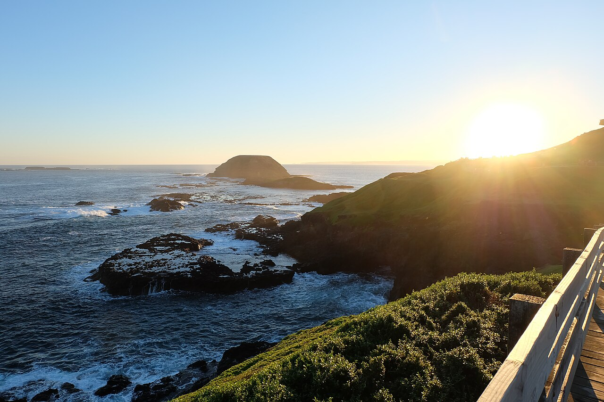

Phillip Island from Cowes · 5-day family itinerary
A 90 to 120 minute drive from Melbourne, then four nights in Cowes, on the island’s north-facing shore. Short boardwalks, a heritage farm and a seal cruise by day, and one late night for a ten-year-old and a six-year-old: the little penguins come ashore at sunset, so in late November the evening runs past 8 pm.

Photo: urxx, The Nobbies Phillip Island Nature Parks, CC BY-SA 4.0, via Wikimedia Commons.

Checked before you commit
This illustrative route drives from Melbourne to Phillip Island and stays four nights in Cowes. Phillip Island Nature Parks pages for the Penguin Parade, the Koala Conservation Reserve, Churchill Island, the Seal Cruise, the reserves and trails, safety and getting there, its penguin arrival calendar, and Destination Phillip Island’s visitor pages were read on 4 November 2026. Nothing was booked.
One drive in, one drive out, and one base. Every stop is a short drive from Cowes: the koalas and Rhyll on Day 2, Churchill Island and the Parade on Day 3, the Summerland Peninsula and the seal cruise on Day 4, and Cape Woolamai on the way home. The Parade sits mid-trip, so no long drive follows the late night.
Boardwalks of 500 m to 1.3 km on most days, and one 4.4 km return walk to the Pinnacles graded easy/moderate. Active day pace adds an optional evening slot, used once, for the Penguin Parade. The morning after it starts late.
We didn’t check accommodation rates or availability, or Penguin Parade or cruise availability. Nature Parks says bookings for the Parade are essential. A booking-hub link is intent only. It doesn’t hold a room, a seat on the grandstand or a place on the cruise.
Planning boundary: dates are illustrative; the worked example runs Monday 23 to Friday 27 November 2026. Nature Parks’ penguin arrival calendar gives about 8:15 pm for November, and says numbers and arrival times vary with the life cycle and the weather. The calendar file is dated 2020 but is the one Nature Parks links today.
Nature Parks says some reserves and trails are closed after severe weather, pending assessment, without naming them. It also says the Nobbies Centre, café and toilets are closed, and the boardwalk toilets at the Parade are unavailable until about February 2027. Alfred doesn’t check penguin arrival times, closures or tides. Book opens a partner checkout; it doesn’t prove a booking.
Route and family-coordination brief
Party: two adults, one ten-year-old and one six-year-old, living in Melbourne. Base: four nights in Cowes. Pace: active, a morning and an afternoon slot plus an optional evening, used once. Budget input: Mid Range.
Getting there: Nature Parks says Phillip Island is 90 to 120 minutes from Melbourne, with extra time in busy seasons, and a further 20 minutes from the bridge to the Penguin Parade. Destination Phillip Island gives the route: Monash Freeway (M1), South Gippsland Highway (M420), Bass Highway (A420) through Grantville and Bass, then Phillip Island Road (B420) to San Remo and over the bridge.
Transport rule: Nature Parks says public transport doesn’t run between its parks, and the V/Line bus to Cowes doesn’t go to the Penguin Parade. There are no return buses to Melbourne after the Parade. Bring the car, or plan on Phillip Island Taxis (03 5952 2200), which Nature Parks lists for transfers on the island.
Penguin rule: Nature Parks says the penguins arrive at sunset every day, and to arrive about one hour before penguin arrival time (30 minutes for Underground viewing). No cameras, camcorders or camera phones after sunset. The Parade is outdoors in all weather: bring warm clothes, a raincoat and a rug for the seats. Everyone, including infants, needs a ticket. Venues are contactless only.
Water and wildlife rule: Nature Parks lists beaches where swimming is not advised, including Woolamai Beach, Berrys Beach and Forrest Caves. It says to swim between the flags, supervise children at all times around water, and stay at least 10 metres from cliff edges and their bases. Drive with care at dawn, dusk and night. Don’t touch sick or dead birds; report them on 1800 675 888.
Left out: Forrest Caves, which Nature Parks says is only safe to walk at low tide, longer Cape Woolamai loops, the 14 km Bush to Bay track, and Penguins Premium and the guided penguin tours, which are for ages 12 and over. The Churchill Island wagon rides run only on weekends, school holidays and public holidays, so they aren’t in this weekday plan.
Day 1 — Drive down, San Remo pelicans, settle in Cowes
Leave Melbourne mid-morning on the Monash Freeway (M1), then the South Gippsland Highway (M420), the Bass Highway (A420) through Grantville and Bass, and Phillip Island Road (B420) to San Remo. Nature Parks gives 90 to 120 minutes from Melbourne, and Destination Phillip Island asks drivers to allow extra time in peak periods and to watch for wildlife.
Stop in San Remo, on the mainland side of the bridge. Destination Phillip Island says the pelicans there are fed daily at 12 noon. Have lunch in the village afterwards.
Cross the bridge and call in at the Phillip Island Visitor Information Centre, 895 Phillip Island Road, Newhaven. Destination Phillip Island says it is open seven days and closed Christmas Day. Then drive on to Cowes and check in.
Destination Phillip Island says Cowes is on one of Victoria’s few north-facing beaches, and that the main beach is patrolled by lifesavers in summer. In late November, check whether the flags are up before anyone swims, and keep paddling within arm’s reach of the six-year-old.
Fallback: if traffic is slow, skip the noon pelicans and go straight to Cowes. Nothing on Day 1 is booked.
Live-check: your accommodation booking; the Bureau of Meteorology forecast; the VicEmergency app.
Day 2 — Koala boardwalks, Rhyll Inlet
Drive to the Koala Conservation Reserve, 1810 Phillip Island Road. Nature Parks lists it as open 10 am to 5:30 pm, last entry 5 pm, with the treetop boardwalks closing to new entry 30 minutes before closing. It lists self-guided entry at A$17.50 adult, A$8.75 child (4–15) and A$43.75 for a family of two adults and two children.
Walk both treetop boardwalks: Nature Parks lists the Koala Boardwalk as an 800 m loop and the Woodland Boardwalk as a 600 m loop, each about 20 minutes and easy. The free Nature Play area is there for the six-year-old. Pack sunscreen, hats and insect repellent; Nature Parks says it doesn’t sell repellent and has drinking fountains on site.
After lunch, drive to the Conservation Hill car park at Rhyll Inlet, off McIlwraith Road. Nature Parks lists the mangrove boardwalk at 1.2 km return, 45 minutes, easy, through paperbark forest to the mudflats, and the lookout walk at 500 m return, 20 minutes. Rhyll Inlet is part of Western Port, a Ramsar-listed wetland.
Fallback: if Rhyll is closed or the weather turns, the Koala Reserve’s visitor centre has indoor displays.
Live-check: Nature Parks’ attractions page for reserve and trail closures; tomorrow’s Penguin Parade tickets.
Day 3 — Slow morning, Churchill Island, Penguin Parade night
Start slowly. Tonight runs late, so the morning is free in Cowes. The Parade should already be booked: Nature Parks says bookings are essential and recommends pre-booking at any time of year. It lists General Viewing at A$34 adult, A$17 child (4–15) and A$85 for a family of two adults and two children, with children under 4 free.
Drive to Churchill Island Heritage Farm, 246 Samuel Amess Drive, Newhaven, which Nature Parks says is located off Phillip Island. Nature Parks lists the farm precinct as open 10 am to 5 pm, last entry 4:30 pm, and entry at A$17.50 adult, A$8.75 child and A$43.75 family.
Aim to arrive by 2 pm for the afternoon farm activities: Nature Parks lists cow milking at 2:10 pm, sheep shearing at 2:30 pm, working dogs at 2:45 pm and whip cracking at 3 pm. The North Point loop is 2 km, about an hour, easy.
Eat an early dinner, then drive to the Penguin Parade, 1019 Ventnor Road, Summerlands. Nature Parks’ calendar gives about 8:15 pm for penguin arrival in November, so aim to be there by about 7:15 pm. The Visitor Centre opens from 12 pm and has a café. The boardwalk toilets are unavailable until about February 2027, so use the Visitor Centre toilets before walking down.
Phones and cameras go away at sunset: Nature Parks says flash and unusual light can frighten penguins. Dress the children for a cold beach, with jackets, raincoats and a rug for the seats. Drive back to Cowes slowly: Nature Parks says wildlife is most active at dawn, dusk and night.
Fallback: if the six-year-old is done before the penguins are, leave. You have the car, and nothing else on the evening is booked.
Live-check: the arrival time printed on your ticket; the weather forecast; the Parade upgrades page.
Day 4 — Late start, seal cruise, the Nobbies at dusk
Sleep in after the Parade. Late morning, drive to Swan Lake, which Nature Parks says is just before the Penguin Parade. Nature Parks lists an easy 1.3 km, 40-minute return walk to the bird hides. Then the Pyramid Rock lookout: two viewing platforms, the first wheelchair accessible, 10 minutes return, easy.
Be back at Cowes Jetty, The Esplanade, for the 2 pm Seal Cruise, which Nature Parks runs with Wildlife Coast Cruises. It is two hours to the fur seal colony at Seal Rocks, boarding 15 minutes before. Nature Parks didn’t list a price on the page we read; check it when you book.
Late afternoon, drive out to the Nobbies. Nature Parks says the boardwalks (500 m) and car park are open, but the Nobbies Centre, café and toilets are closed. The Boulevard between the Nobbies and the Penguin Parade is open to moving traffic only, with no parking. Nature Parks points instead to the toilets at the Penguin Parade Visitor Centre, open from 12 pm, and its car park.
Fallback: if the sea is rough and the cruise doesn’t go, swap Day 4 and Day 5 and do Cape Woolamai today.
Live-check: Seal Cruise booking and departure; the Nobbies notice; cliff and wind warnings.
Day 5 — Cape Woolamai Pinnacles, drive home
Check out and drive to the Cape Woolamai Surf Lifesaving Club car park. Nature Parks lists the Pinnacles return at 4.4 km, two hours, easy/moderate: walk down the ramp onto the beach, about 900 m along the sand to the staircase, then along the clifftop trail. It says walks may be impassable on very high tides, so check the tide first.
In this plan the ten-year-old walks it, and the six-year-old may be happier on the beach with one adult. Nature Parks says the cape is exposed, to bring water, to stay on the tracks, and to watch for snakes in warm weather. Swimming is not advised at Woolamai Beach.
Lunch, then drive home over the San Remo bridge. Nature Parks says to allow extra time from Melbourne in busy seasons.
Fallback: if the tide is too high or the wind is up, skip the Pinnacles and stop at Churchill Island’s café or the San Remo jetty on the way home.
Live-check: the tide; the Bureau of Meteorology forecast; VicEmergency; traffic.
Planning notes
Dates are illustrative. At decision time, recheck the Penguin Parade page and arrival calendar, Nature Parks’ attractions page for reserve and trail closures, the Nobbies and Parade upgrade notices, the Seal Cruise departure times and your accommodation booking. A travelling profile is required, and the adults, children and ages Alfred plans for come from the travellers on that profile.
On web Lets Go, Holiday takes origin, destination, dates, a budget step and a day pace, then Plan my trip queues the itinerary. Active day pace fills a morning and an afternoon slot and adds an optional evening, with lunch and dinner. The Estimated costs bar, when it appears, is a rounded median of flight-and-hotel packages, so it isn’t a useful number for a family driving from Melbourne.
While the trip is still Planning, you can keep or change the hotel and then the flights Alfred picked. We did not test whether city search offers Phillip Island or Cowes, what Alfred plans for flights on a trip you drive, or whether Alfred’s hotel choices include places in Cowes.
Once the trip is ACTIVE, you can edit an item’s title, times, location and notes, so “Penguin Parade; arrive 7:15 pm; jackets, raincoats, rug; phones away after sunset; toilets at the Visitor Centre first” can sit on the card. In Hey Alfred you can ask to swap two full days, and you confirm before it is applied. Book opens a partner checkout. It doesn’t know when the penguins will arrive.
Plan a trip
Start with your people, dates and pace, then review the editable plan before booking.
Plan a trip